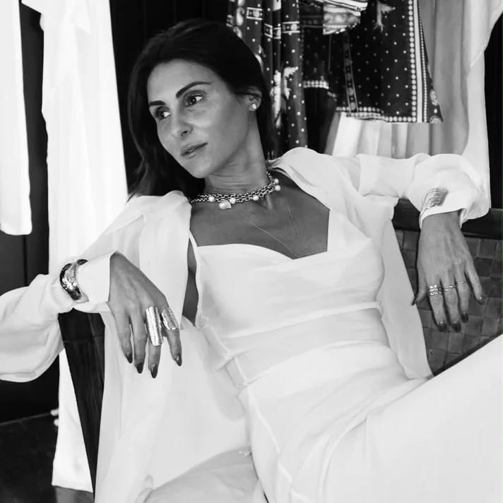

X
the art gallery by
erez zielinski rozen
גלריית ארז זילינסקי רוזן בכיכר המדינה מארחת את אלודי חייט מהמותג Elodie K ב־Hosting Designers Pop Up בתאריכים 15.10.2026 - 09.11.2026.
משי, הדפסים ורוח של חופש.
Elodie K משלב אלגנטיות פריזאית, את הנינוחות של לוס אנג׳לס ואת האנרגיה של תל אביב. המותג, שהוקם על ידי אלודי חייט, יוצר פריטים בעלי אמירה אישית לנשים ולגברים, עם משי, תחרה והדפסים ייחודיים בלב הקולקציות.
מוטיבים בהשראת צעיפי משי, הדפסי בנדנה וגזרות זורמות מגדירים מלתחה שנעה בטבעיות בין החיים בעיר ליעדים רחוקים. שמלות קומבינזון, חולצות בגזרות נינוחות, מערכות לבוש תואמות וקימונו מזמינים גישה אישית ללבוש — חושנית, אינטואיטיבית וחופשית.
בגלריה תוצג בחירה מוקפדת מתוך עולמו של Elodie K, שבו בד, צבע ותנועה הופכים לאמצעי לביטוי עצמי.
על המייסדת
אלודי חייט נולדה וגדלה בפריז, ופיתחה את נקודת המבט האסתטית שלה דרך אופנה, מסעות וחיים בין תרבויות. בשנת 2014 פתחה את חנות הקונספט שלה במלרוז פלייס בלוס אנג׳לס, ויצרה עולם המשקף את טעמה הייחודי ואת הקשר הקרוב שלה עם לקוחותיה.
כיום היא מתגוררת בתל אביב ופועלת בין ערים, ומביאה את נקודת המבט הזו ל־Elodie K: מלתחה המבוססת על הדפסים בלתי נשכחים, בדים זורמים ופריטים שנבחרים בזכות האופי שלהם, ולא לפי טרנדים חולפים.
אינסטגרם: @elodiekofficial
erez zielinski rozen

khayat